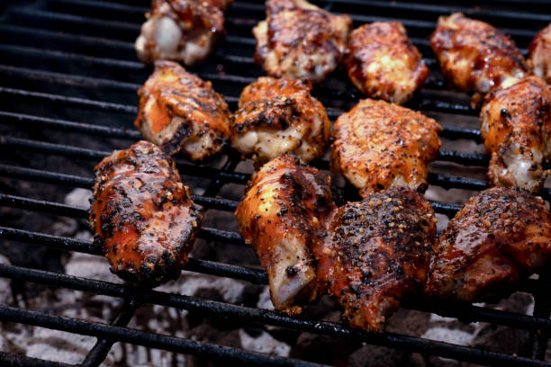

Wings

Crispy baked chicken wings smothered in a sweet and tangy homemade barbecue sauce.
Ingredients
- Chicken wings
- Baking powder
- Salt and pepper
- Smoked paprika
- Garlic powder
- Honey
- BBQ sauce
Steps
- Preheat oven to 425F (220C). Line a baking sheet with parchment paper and place an oven rack on top.
- Place the chicken wings into a large bowl, add oil and toss to coat. In a small bowl combine salt with garlic powder, smoked paprika and black pepper. Add the mixture over the chicken wings and toss to coat evenly.
- Arrange the seasoned chicken wings on the rack in one layer.
- Bake for 40-45 minutes depending on their size, flipping once after the first 20 minutes.
- While the wings are baking prepare the sauce.
- Place the barbecue sauce with honey and hot sauce (your choice) into a small saucepan. Simmer over low heat for 2-3 minutes.
- Remove the wings form the oven and brush with barbecue sauce.
- Bake for 10-15 minutes until glaze is glossy and caramelized.
- Garnish with green onion and serve with your favorite dipping sauce. Enjoy.